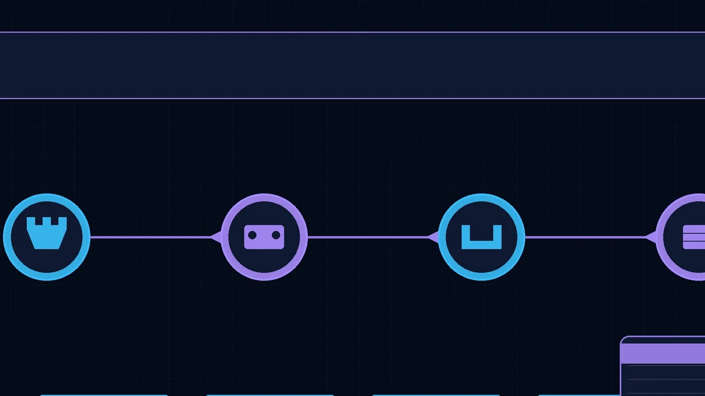
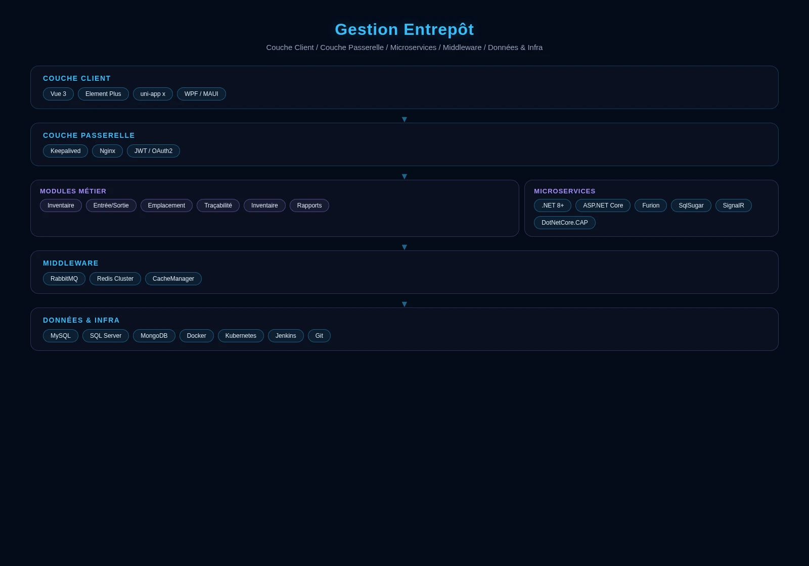

Le Système de Gestion d'Entrepôt (WMS) permet la gestion digitale des opérations d'entrepôt, améliorant la précision des stocks et l'efficacité opérationnelle.
Fonctionnalités clés
Gestion des Réceptions
Réception, contrôle qualité, mise en rayon et suivi par lot des marchandises entrantes.
Gestion des Expéditions
Préparation, emballage, expédition et appariement transporteur pour les commandes sortantes.
Gestion des Stocks
Requêtes d'inventaire en temps réel, comptage cyclique, alertes de stock de sécurité et gestion des dates de péremption.
Gestion des Allocations
Transferts inter-entrepôts, suggestions de réapprovisionnement et chemins de picking optimisés.
Barcode / RFID
Traçabilité par code-barres ou RFID sur l'ensemble du processus pour des opérations précises et efficaces.
Analyse de Rapports
Rapports multidimensionnels incluant la rotation des stocks, l'analyse des entrées/sorties et les performances des opérateurs.
Scénarios d'application
Système de Gestion d'Entrepôt (WMS)
Le Système de Gestion d'Entrepôt (WMS) permet la gestion digitale des opérations d'entrepôt, améliorant la précision des stocks et l'efficacité opérationnelle.
Gestion Multi-Entrepôts
Gestion unifiée des entrepôts du siège, régionaux et de projet avec visibilité globale des stocks en temps réel.
Stockage de Matériaux de Construction
Gestion d'entreposage spécialisée pour matériaux de construction en vrac tels que l'acier, le ciment et équipements CVC.

Intégration Achats & Finance
Intégration profonde avec les systèmes d'achat et financiers, bouclant le cycle approvisionnement–réception–règlement.
Avantages du système
Support de la gestion multi-entrepôts et multi-propriétaires, adaptable aux entrepôts de différentes tailles et modèles d'affaires. Interfaces API ouvertes pour l'intégration avec les ERP, systèmes de gestion du transport et plateformes e-commerce.
Architecture du système

Architecture à trois couches : Couche serveur, Couche Web et Couche mobile.